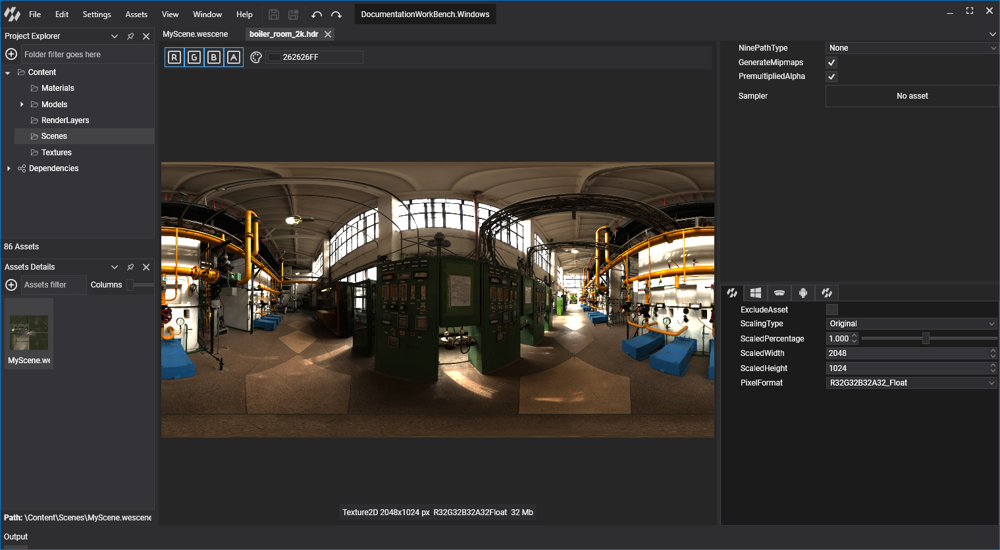
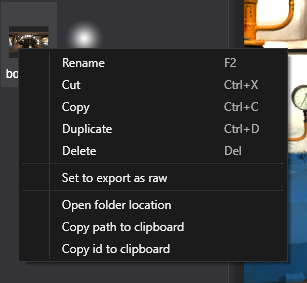
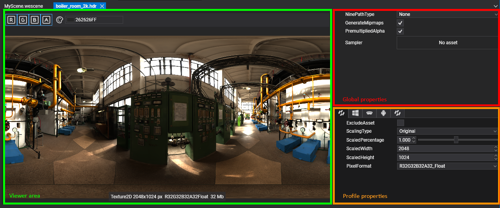
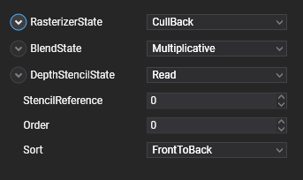
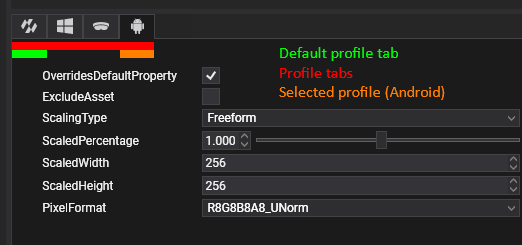
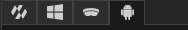
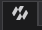

Edit Assets

Each asset type has properties you can change in Evergine Studio, and most of them can take different values per profile. For example, you can halve the resolution of a texture or pick a different PixelFormat for the Android profile while keeping the full-size texture on Windows.
This page covers the actions common to all assets and the parts every asset editor shares. The editor of each asset type is described in its own section; see the list of asset editors.
Context menu actions
Right-click an asset in the Assets Details panel to open its context menu.

| Action | Shortcut | Description |
|---|---|---|
| Rename | F2 | Renames the asset. Its metafile is renamed with it and the ID does not change. |
| Cut | Ctrl+X | Marks the asset to be moved with Paste. |
| Copy | Ctrl+C | Marks the asset to be copied with Paste. |
| Paste | Ctrl+V | Available on folders. Moves or copies the cut or copied assets into the folder. |
| Duplicate | Ctrl+D | Creates a copy of the asset in the same folder, with a new ID. |
| Delete | Del | Deletes the asset, its metafile and its source file. |
| Create Asset | Available on folders. Opens the same import and create items as the Assets menu. | |
| Set to export as raw | Copies the source file to the application output as is, instead of exporting the processed version. Load it with LoadRaw<T> (see Use Assets). The item changes to Unset to export as raw on raw assets. |
|
| Open folder location | Opens File Explorer in the folder that contains the asset. | |
| Copy path to clipboard | Copies the full path of the asset metafile. | |
| Copy id to clipboard | Copies the asset ID, the same Guid that EvergineContent exposes. |
Note
Assets that belong to a dependency, such as the ones in Evergine.Core, are read-only. You can use them in your scenes and assets, but you cannot rename, move or modify them.
Open an asset editor
Double-click an asset in the Assets Details panel, or select it and press Enter, to open its editor as a new tab in the document area. Assets marked to export as raw do not have an editor.

Editors differ by asset type, but most of them share three areas:
- The viewer area.
- The global properties.
- The profile properties.
Save your changes with File > Save (Ctrl+S), or File > Save All (Ctrl+Shift+S) to save every open editor.
Viewer area
The viewer shows a live preview of the asset, often with a toolbar to change how it is displayed. For example:
- Show or hide the red, green, blue and alpha channels of a texture, or pick its mipmap level.
- Play and pause an animation of a model, or show its wireframe, normals and bounding box.
- Choose the geometry and background used to preview a material.
Global properties
Global properties apply to the asset in every profile. This is the Render Layer editor, for example:

Profile properties
Assets whose export can change per platform, such as textures, models and effects, have a profile properties area:

- Profile tabs:

The first tab
holds the default values. Then there is one tab per project profile, with the icon of its platform. - OverridesDefaultProperty: in a profile tab, enable it to give that profile its own values. While it is disabled, the profile uses the default values.
- ExcludeAsset: skips the asset when exporting that profile, so it is not included in the application. Use it for content that only makes sense on some platforms.